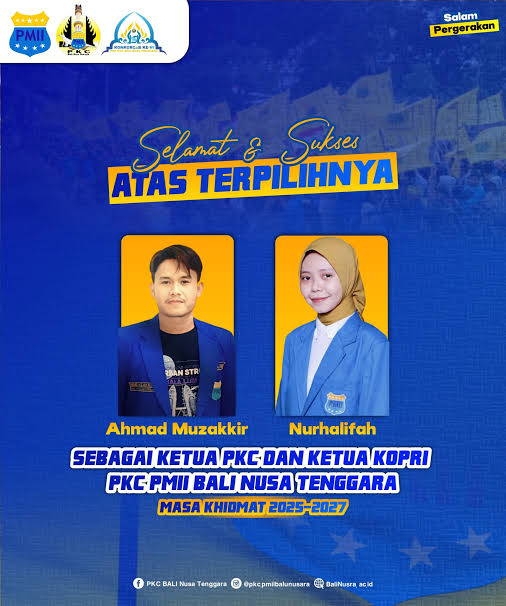

TENTANG
PMII Bali Nusra
Pergerakan Mahasiswa Islam Indonesia (PMII) adalah organisasi ekstra-kampus berbasis Ahlussunnah wal Jamaah yang didirikan pada 17 April 1960 di Surabaya. Kelahirannya merupakan respons atas kebutuhan wadah independen bagi mahasiswa Nahdliyin. PMII bertujuan membentuk pribadi muslim Indonesia yang bertakwa, berilmu, dan berkomitmen pada cita-cita kemerdekaan. Sejak awal, PMII aktif sebagai wadah kaderisasi, advokasi sosial, dan kontributor pemikiran intelektual. Melalui Deklarasi Murnajati 1972, PMII menegaskan independensinya dari NU. Hingga kini, PMII terus memberikan kontribusi signifikan di berbagai bidang untuk kemajuan bangsa.

PKC PMII Bali Nusa Tenggara (Bali Nusra) adalah pilar penting gerakan mahasiswa di Bali, NTB, dan NTT. PKC berfokus pada kaderisasi berbasis digital dan aktif mengawal isu lingkungan serta demokrasi. Pada Konferensi Koordinator Cabang (Konkorcab) VI tahun 2025, Ahmad Muzakkir dan Nurhalifah terpilih sebagai Ketua PKC dan Ketua KOPRI PKC masa khidmat 2025–2027. Di bawah kepemimpinan mereka, PKC PMII Bali Nusra berkomitmen untuk mempertajam kualitas kader, memperkuat digitalisasi, dan melanjutkan advokasi sosial-ekologis yang kritis untuk menjawab tantangan zaman.